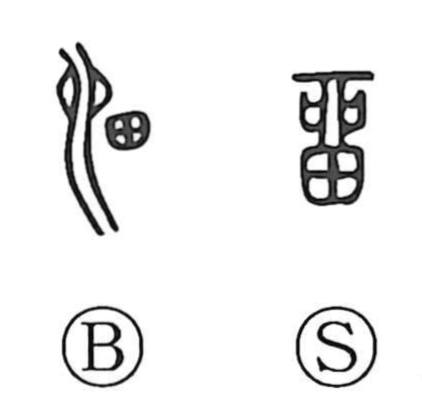

留

Kun: tomeru, tomaru, todomaru, nokoru | On: ryu, ru
to stop ・ to stay ・ to remain ・ to detain
Explanation
This character combines 田 with an element written as 卯 (also seen as 卵), whose ancient form depicts a puddle or water hole beside a flowing stream. Together they picture water collecting on the rice fields, and so the original sense was of water gathering and being held back—‘to pool, accumulate’—which naturally extended to ‘to stop, stay, remain.’ In later usage it came to mean simply ‘to stop’ or ‘to stay.’ The Shuowen glosses it as ‘to stop/stay,’ while the related form 溜 denotes stagnant water.